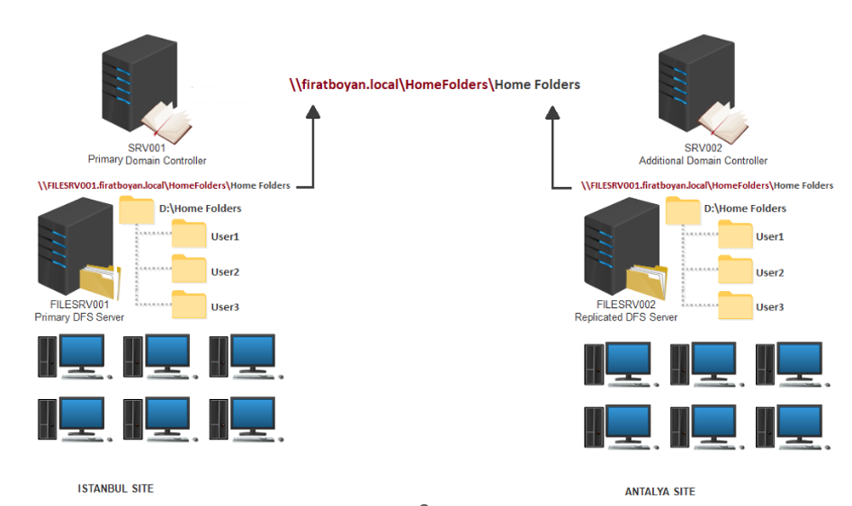
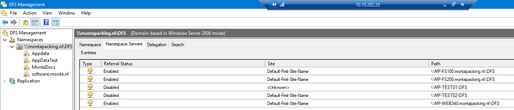
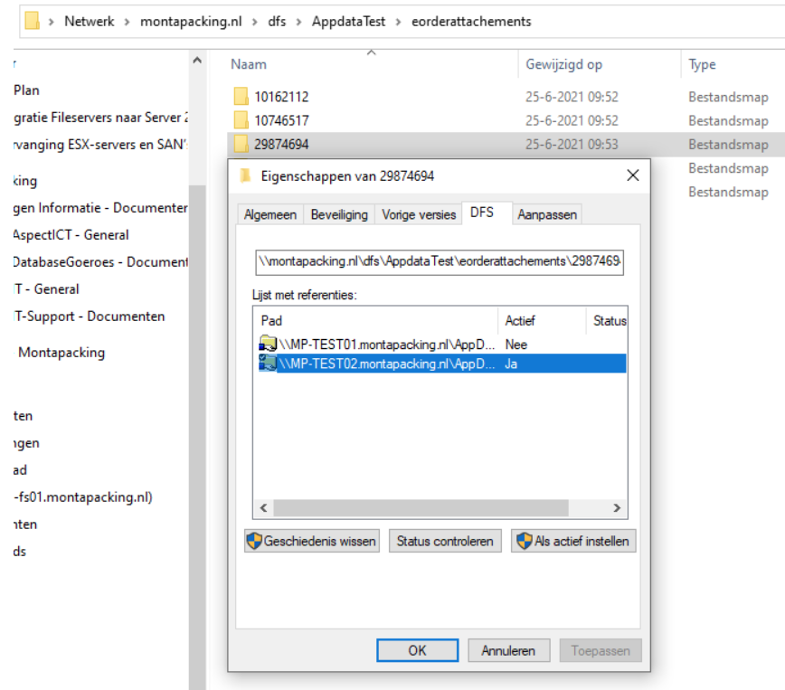

DFS Algemeen
DFS Namespace
In onderstaand plaatje is weergegeven hoe een DFS Namespace in elkaar zit. 
Onderstaand de situatie bij Monta medio mei 2023.

Fileservers DFS
De fileservers MP-FS100 en MP-FS200 worden ontsloten via de DFS Namespace \montapacking.nl\DFS.
De MP-FS100 is preferred, als de MP-FS100 niet bereikbaar is duurt het een aantal minuten (kan niet minder dan 40 seconden zijn want dit is de SMB-timeout) voordat er overgeschakeld wordt naar de MP-FS200.
Er is een cache referral ingesteld van 5 minuten. Het lijkt niet verstandig om dat korter te zetten, omdat dat teveel netwerkverkeer oplevert.
Een client houdt dan maximaal de MP-FS100 of de MP-FS200 in de cache.
Als de MP-FS100 niet bereikbaar is geweest duurt het maximaal 5 minuten voordat een client weer met deze (preferred) server connectie maakt.
Zie ook : https://www.reddit.com/r/sysadmin/comments/55m3kb/lowest_realistic_cache_setting_in_dfsr/
What happens is, both referrals stay active and on first attempt to access the namespace target, the clients wait for SMB timeout to happen, which is about 40 seconds and it is hardcoded in Windows IIRC.
Then after the timeout, the clients select the secondary referral that is actually online,
and remember to use that until the next referral cache update.
Backlog bekijken : dfsrdiag backlog /rgname:"MP-FSCLus01" /rfname:"appdata" /sendingmember:"MP-FS100" /receivingmember:"MP-FS200"
Handige DFS powershell commando's en links:
Get-DfsrMembership -GroupName MP-FSClus01 -ComputerName
Get-DfsrState -ComputerName "MP-FS100" | Format-Table FileName,UpdateState,Inbound,Source -Auto -Wrap
Get-DfsrBacklog -SourceComputerName MP-FS100 -DestinationComputerName MP-FS200\
Primary DFS Member
Bij de installatie van DFS wordt een primary member opgegeven.
Na installatie is dat niet meer te zien.
https://techcommunity.microsoft.com/t5/storage-at-microsoft/determining-which-member-was-set-as-the-primary-member-for-dfs/ba-p/423220\
Op fileniveau kun je wel zien welke DFS-server Primary is:

DFS Staging
Er zijn verschillende adviezen over de grootte van de staging.
In deze artikelen van Microsoft wordt geadviseerd om de staging file gelijk te maken aan de 32 grootste bestanden in DFS.
https://docs.microsoft.com/en-us/previous-versions/orphan-topics/ws.11/dn465158(v=ws.11)?redirectedfrom=MSDN\
https://docs.microsoft.com/en-us/windows-server/troubleshoot/how-to-determine-the-minimum-staging-area-dfsr-needs-for-a-replicated-folder\
Get-ChildItem c:\temp -recurse | Sort-Object length -descending | select-object -first 32 | ft name,length -wrap –auto
Get-ChildItem c:\temp -recurse | Sort-Object length -descending | select-object -first 32 | measure-object -property length –sum
Onderstaand commando rekent het om naar GB.
$big32 = Get-ChildItem c:\temp -recurse | Sort-Object length -descending | select-object -first 32 | measure-object -property length –sum
$big32.sum /1gb
De default is 4 GB.
Event 4208 is een goede indicator voor de grootte van de staging. Dit even mag niet meer dan een keer per uur voorkomen.
Geadviseerd wordt om staging folders op een andere disk te zetten dan de replicated folders.
DFS Replicatie Alternatief
DFS Replicatie blijft een black box, waar je maar zeer beperkt wat aan kunt zien.
Een alternatief het pakket "Resilio", zie : is https://www.resilio.com/tech/connect-vs-dfsr/
DFS Tools
DFSUtil.exe /spcinfo.
DFSUtil.exe /pktinfo.
DFSUtil is te installeren als onderdeel van RSAT, bijvoorbeeld via powershell Add-WindowsCapability -Online -Name "Rsat.FileServices.Tools
Het kan ook via het control panel en dan via het toevoegen van "Optionele onderdelen - RSAT: Hulpprogramma's voor Bestandservices".
Backlog bekijken
dfsrdiag backlog /rgname:"MP-FSCLus01" /rfname:"appdata" /sendingmember:"MP-FS100" /receivingmember:"MP-FS200"
Op de MP-FS100 : Get-DfsrState -ComputerName "mp-fs200" | Format-Table FileName,UpdateState,Inbound,Source* -Auto -Wrap Dit geeft 100 files die op dat moment verwerkt worden.
In "C:\windows\debug" staan logfiles, deze kunnen met 7-zip bekeken worden.
Zie : https://docs.microsoft.com/en-us/troubleshoot/windows-server/networking/dfsn-access-failures